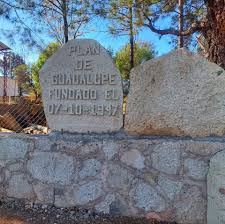

| Principal Historia Curiocidades Ubicacion Contacto | La localidad dePlan de Guadalupe (Oaxaca) pertenece al Municipio de Heroica Ciudad de Tlaxiaco. Hay 431 habitantes y está a 2,155 metros de altura. Es el pueblo más poblado en la posición número 9 de todo el municipio.
Para ubicar este precioso pueblo dentro del municipio, debes saber que Plan de Guadalupe se encuentra a 13.4 kilómetros (en dirección Noroeste) de la localidad de Heroica Ciudad de Tlaxiaco, que es la que más habitantes tiene dentro del municipio. 
|